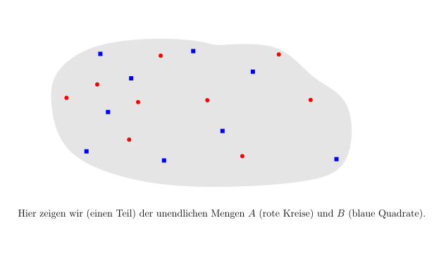
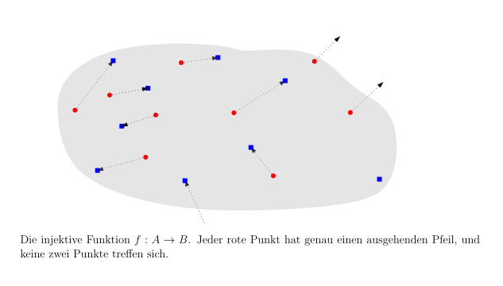
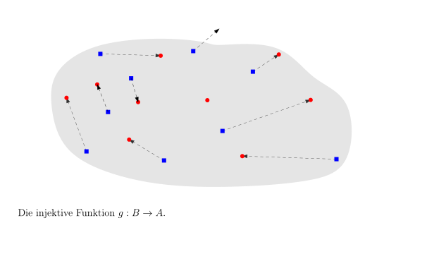
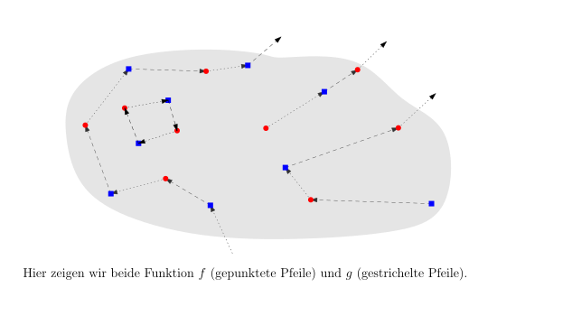
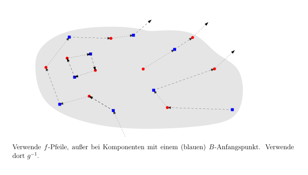
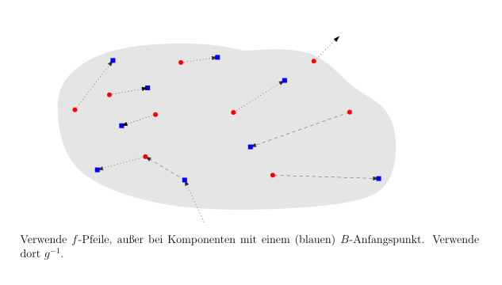

3.5 Das Schröder-Bernstein-Theorem./course1/wly/03/05-Schroeder-Bernstein.wly:2:11
3.5 Das Schröder-Bernstein-Theorem./course1/wly/03/05-Schroeder-Bernstein.wly:2:11
Betrachten./course1/wly/03/05-Schroeder-Bernstein.wly:4:6 wir noch einmal einen Beweis, dass./course1/wly/03/05-Schroeder-Bernstein.wly:4:17 ./course1/wly/03/05-Schroeder-Bernstein.wly:5:5$[0,1] \times [0,1] \approx [0,1]$./course1/wly/03/05-Schroeder-Bernstein.wly:5:5../course1/wly/03/05-Schroeder-Bernstein.wly:5:39 Wir nehmen zwei Zahlen./course1/wly/03/05-Schroeder-Bernstein.wly:5:39 ./course1/wly/03/05-Schroeder-Bernstein.wly:6:5$(x,y) \in [0,1] \times [0,1]$./course1/wly/03/05-Schroeder-Bernstein.wly:6:5 und schreiben sie in./course1/wly/03/05-Schroeder-Bernstein.wly:6:35 Binärdarstellung ./course1/wly/03/05-Schroeder-Bernstein.wly:7:5$0.x_1 x_2 x_3 \dots$./course1/wly/03/05-Schroeder-Bernstein.wly:7:22 und./course1/wly/03/05-Schroeder-Bernstein.wly:7:43 ./course1/wly/03/05-Schroeder-Bernstein.wly:8:5$0.y_1 y_2 y_3\dots$./course1/wly/03/05-Schroeder-Bernstein.wly:8:5,./course1/wly/03/05-Schroeder-Bernstein.wly:8:25 wobei wir ./course1/wly/03/05-Schroeder-Bernstein.wly:8:25$1$./course1/wly/03/05-Schroeder-Bernstein.wly:8:37 nicht als ./course1/wly/03/05-Schroeder-Bernstein.wly:8:40$1.000\dots$./course1/wly/03/05-Schroeder-Bernstein.wly:8:51,./course1/wly/03/05-Schroeder-Bernstein.wly:8:63 ./course1/wly/03/05-Schroeder-Bernstein.wly:8:63 sondern als ./course1/wly/03/05-Schroeder-Bernstein.wly:9:5$0.111\dots$./course1/wly/03/05-Schroeder-Bernstein.wly:9:17 schreiben. Wir produzieren eine./course1/wly/03/05-Schroeder-Bernstein.wly:9:29 Zahl ./course1/wly/03/05-Schroeder-Bernstein.wly:10:5$f(x,y) \in [0,1]$./course1/wly/03/05-Schroeder-Bernstein.wly:10:10,./course1/wly/03/05-Schroeder-Bernstein.wly:10:28 indem wir die Binärdarstellungen./course1/wly/03/05-Schroeder-Bernstein.wly:10:28 von ./course1/wly/03/05-Schroeder-Bernstein.wly:11:5$x$./course1/wly/03/05-Schroeder-Bernstein.wly:11:9 und ./course1/wly/03/05-Schroeder-Bernstein.wly:11:12$y$./course1/wly/03/05-Schroeder-Bernstein.wly:11:17 verschränken:./course1/wly/03/05-Schroeder-Bernstein.wly:11:20 ./course1/wly/03/05-Schroeder-Bernstein.wly:12:5$f(x,y) = 0.x_1 y_1 x_2 y_2 x_3 y_3 \dots$./course1/wly/03/05-Schroeder-Bernstein.wly:12:5../course1/wly/03/05-Schroeder-Bernstein.wly:12:47 Diese Funktion./course1/wly/03/05-Schroeder-Bernstein.wly:12:47 ist injektiv. Aber eben nicht surjektiv: die Zahl./course1/wly/03/05-Schroeder-Bernstein.wly:13:5 ./course1/wly/03/05-Schroeder-Bernstein.wly:14:5$0.00111111$./course1/wly/03/05-Schroeder-Bernstein.wly:14:5 beispielsweise ist nicht im Wertebereich der./course1/wly/03/05-Schroeder-Bernstein.wly:14:17 Funktion. Aber da ./course1/wly/03/05-Schroeder-Bernstein.wly:15:5$[0,1] \times [0,1]$./course1/wly/03/05-Schroeder-Bernstein.wly:15:23 ja viel größer als./course1/wly/03/05-Schroeder-Bernstein.wly:15:43 ./course1/wly/03/05-Schroeder-Bernstein.wly:16:5$[0,1]$./course1/wly/03/05-Schroeder-Bernstein.wly:16:5 erscheint, ist die Hauptarbeit geleistet../course1/wly/03/05-Schroeder-Bernstein.wly:16:12 Surjektivität herzustellen sollte nicht so schwer sein../course1/wly/03/05-Schroeder-Bernstein.wly:17:5 Formalisieren wir diese Gedanken durch etwas Notation../course1/wly/03/05-Schroeder-Bernstein.wly:18:5
Definition 3.5.1./course1/wly/03/05-Schroeder-Bernstein.wly:20:5 ./course1/wly/03/05-Schroeder-Bernstein.wly:20:5 Seien ./course1/wly/03/05-Schroeder-Bernstein.wly:21:9$A$./course1/wly/03/05-Schroeder-Bernstein.wly:21:15 und ./course1/wly/03/05-Schroeder-Bernstein.wly:21:18$B$./course1/wly/03/05-Schroeder-Bernstein.wly:21:23 zwei Mengen. Wir schreiben ./course1/wly/03/05-Schroeder-Bernstein.wly:21:26$A \leq B$./course1/wly/03/05-Schroeder-Bernstein.wly:21:54,./course1/wly/03/05-Schroeder-Bernstein.wly:21:64 ./course1/wly/03/05-Schroeder-Bernstein.wly:21:64 wenn es eine injektive Funktion ./course1/wly/03/05-Schroeder-Bernstein.wly:22:9$f : A \rightarrow B$./course1/wly/03/05-Schroeder-Bernstein.wly:22:41 ./course1/wly/03/05-Schroeder-Bernstein.wly:22:62 gibt. Falls ./course1/wly/03/05-Schroeder-Bernstein.wly:23:9$A \leq B$./course1/wly/03/05-Schroeder-Bernstein.wly:23:21 und ./course1/wly/03/05-Schroeder-Bernstein.wly:23:31$A \not \approx B$./course1/wly/03/05-Schroeder-Bernstein.wly:23:36 gilt, so./course1/wly/03/05-Schroeder-Bernstein.wly:23:54 schreiben wir ./course1/wly/03/05-Schroeder-Bernstein.wly:24:9$A \lt B$./course1/wly/03/05-Schroeder-Bernstein.wly:24:23../course1/wly/03/05-Schroeder-Bernstein.wly:24:32
Beispielsweise haben wir ./course1/wly/03/05-Schroeder-Bernstein.wly:26:5$\N \lt \R$./course1/wly/03/05-Schroeder-Bernstein.wly:26:30../course1/wly/03/05-Schroeder-Bernstein.wly:26:41 Obige injektive./course1/wly/03/05-Schroeder-Bernstein.wly:26:41 Funktion ./course1/wly/03/05-Schroeder-Bernstein.wly:27:5$f : [0,1]\times [0,1]\rightarrow [0,1]$./course1/wly/03/05-Schroeder-Bernstein.wly:27:14 bezeugt,./course1/wly/03/05-Schroeder-Bernstein.wly:27:54 dass ./course1/wly/03/05-Schroeder-Bernstein.wly:28:5$[0,1] \times [0,1] \leq [0,1]$./course1/wly/03/05-Schroeder-Bernstein.wly:28:10../course1/wly/03/05-Schroeder-Bernstein.wly:28:41 Gilt auch./course1/wly/03/05-Schroeder-Bernstein.wly:28:41 ./course1/wly/03/05-Schroeder-Bernstein.wly:29:5$[0,1] \leq [0,1] \times [0,1]$./course1/wly/03/05-Schroeder-Bernstein.wly:29:5?./course1/wly/03/05-Schroeder-Bernstein.wly:29:36 Natürlich: die Funktion./course1/wly/03/05-Schroeder-Bernstein.wly:29:36 ./course1/wly/03/05-Schroeder-Bernstein.wly:30:5$g : [0,1] \rightarrow [0,1] \times [0,1]$./course1/wly/03/05-Schroeder-Bernstein.wly:30:5 mit./course1/wly/03/05-Schroeder-Bernstein.wly:30:47 ./course1/wly/03/05-Schroeder-Bernstein.wly:31:5$g(x) = (x,0)$./course1/wly/03/05-Schroeder-Bernstein.wly:31:5 ist injektiv. Jetzt sollten Sie aufhorchen:./course1/wly/03/05-Schroeder-Bernstein.wly:31:19 wir haben zwei Mengen ./course1/wly/03/05-Schroeder-Bernstein.wly:32:5$A = [0,1] \times [0,1]$./course1/wly/03/05-Schroeder-Bernstein.wly:32:27 und./course1/wly/03/05-Schroeder-Bernstein.wly:32:51 ./course1/wly/03/05-Schroeder-Bernstein.wly:33:5$B = [0,1]$./course1/wly/03/05-Schroeder-Bernstein.wly:33:5 und haben ./course1/wly/03/05-Schroeder-Bernstein.wly:33:16$A \leq B$./course1/wly/03/05-Schroeder-Bernstein.wly:33:27 und ./course1/wly/03/05-Schroeder-Bernstein.wly:33:37$B \leq A$./course1/wly/03/05-Schroeder-Bernstein.wly:33:42 gezeigt../course1/wly/03/05-Schroeder-Bernstein.wly:33:52 Folgt daraus nicht offensichtlich, dass ./course1/wly/03/05-Schroeder-Bernstein.wly:34:5$A$./course1/wly/03/05-Schroeder-Bernstein.wly:34:45 und ./course1/wly/03/05-Schroeder-Bernstein.wly:34:48$B$./course1/wly/03/05-Schroeder-Bernstein.wly:34:53 gleich./course1/wly/03/05-Schroeder-Bernstein.wly:34:56 groß sind, also ./course1/wly/03/05-Schroeder-Bernstein.wly:35:5$A \approx B$./course1/wly/03/05-Schroeder-Bernstein.wly:35:21?./course1/wly/03/05-Schroeder-Bernstein.wly:35:34 Lassen Sie sich nicht von./course1/wly/03/05-Schroeder-Bernstein.wly:35:34 der suggestiven Notation ./course1/wly/03/05-Schroeder-Bernstein.wly:36:5$\leq$./course1/wly/03/05-Schroeder-Bernstein.wly:36:30 verführen! ./course1/wly/03/05-Schroeder-Bernstein.wly:36:36$A \leq B$./course1/wly/03/05-Schroeder-Bernstein.wly:36:48 und./course1/wly/03/05-Schroeder-Bernstein.wly:36:58 ./course1/wly/03/05-Schroeder-Bernstein.wly:37:5$B \leq A$./course1/wly/03/05-Schroeder-Bernstein.wly:37:5 heißen, dass es injektive Funktion./course1/wly/03/05-Schroeder-Bernstein.wly:37:15 ./course1/wly/03/05-Schroeder-Bernstein.wly:38:5$f : A \rightarrow B$./course1/wly/03/05-Schroeder-Bernstein.wly:38:5 und ./course1/wly/03/05-Schroeder-Bernstein.wly:38:26$g : B \rightarrow A$./course1/wly/03/05-Schroeder-Bernstein.wly:38:31 gibt. Um./course1/wly/03/05-Schroeder-Bernstein.wly:38:52 daraus zu folgern, dass ./course1/wly/03/05-Schroeder-Bernstein.wly:39:5$A \approx B$./course1/wly/03/05-Schroeder-Bernstein.wly:39:29 gilt, müssen wir./course1/wly/03/05-Schroeder-Bernstein.wly:39:42 diese zu ./course1/wly/03/05-Schroeder-Bernstein.wly:40:5einer./course1/wly/03/05-Schroeder-Bernstein.wly:40:15 bijektiven Funktion ./course1/wly/03/05-Schroeder-Bernstein.wly:40:21$h: A \rightarrow B$./course1/wly/03/05-Schroeder-Bernstein.wly:40:42 ./course1/wly/03/05-Schroeder-Bernstein.wly:40:62 kombinieren. Geht das immer?./course1/wly/03/05-Schroeder-Bernstein.wly:41:5
Theorem 3.5.2 (Schröder-Bernstein-Theorem)../course1/wly/03/05-Schroeder-Bernstein.wly:43:5 Seien ./course1/wly/03/05-Schroeder-Bernstein.wly:44:40$A$./course1/wly/03/05-Schroeder-Bernstein.wly:44:47 und ./course1/wly/03/05-Schroeder-Bernstein.wly:44:50$B$./course1/wly/03/05-Schroeder-Bernstein.wly:44:55 zwei./course1/wly/03/05-Schroeder-Bernstein.wly:44:58 Mengen. Wenn ./course1/wly/03/05-Schroeder-Bernstein.wly:45:9$A \leq B$./course1/wly/03/05-Schroeder-Bernstein.wly:45:22 und ./course1/wly/03/05-Schroeder-Bernstein.wly:45:32$B \leq A$./course1/wly/03/05-Schroeder-Bernstein.wly:45:37 gilt, dann gilt./course1/wly/03/05-Schroeder-Bernstein.wly:45:47 ./course1/wly/03/05-Schroeder-Bernstein.wly:46:9$A \approx B$./course1/wly/03/05-Schroeder-Bernstein.wly:46:9../course1/wly/03/05-Schroeder-Bernstein.wly:46:22 In Worten: wenn es injektive Funktionen./course1/wly/03/05-Schroeder-Bernstein.wly:46:22 ./course1/wly/03/05-Schroeder-Bernstein.wly:47:9$f: A \rightarrow B$./course1/wly/03/05-Schroeder-Bernstein.wly:47:9 und ./course1/wly/03/05-Schroeder-Bernstein.wly:47:29$g : B\rightarrow A$./course1/wly/03/05-Schroeder-Bernstein.wly:47:34 gibt, dann./course1/wly/03/05-Schroeder-Bernstein.wly:47:54 gibt es auch eine bijektive Funktion ./course1/wly/03/05-Schroeder-Bernstein.wly:48:9$h: A \rightarrow B$./course1/wly/03/05-Schroeder-Bernstein.wly:48:46../course1/wly/03/05-Schroeder-Bernstein.wly:48:66
Beweis Wir tun so, als ob ./course1/wly/03/05-Schroeder-Bernstein.wly:51:9$A \cap B = \emptyset$./course1/wly/03/05-Schroeder-Bernstein.wly:51:28 gälte. Falls./course1/wly/03/05-Schroeder-Bernstein.wly:51:50 dies nicht der Fall sein sollte, können wir ./course1/wly/03/05-Schroeder-Bernstein.wly:52:9$A$./course1/wly/03/05-Schroeder-Bernstein.wly:52:53 durch./course1/wly/03/05-Schroeder-Bernstein.wly:52:56 ./course1/wly/03/05-Schroeder-Bernstein.wly:53:9$A \times \{0\} = \{ (a,0) \ | \ a \in A\}$./course1/wly/03/05-Schroeder-Bernstein.wly:53:9 ersetzen und./course1/wly/03/05-Schroeder-Bernstein.wly:53:52 ./course1/wly/03/05-Schroeder-Bernstein.wly:54:9$B$./course1/wly/03/05-Schroeder-Bernstein.wly:54:9 durch ./course1/wly/03/05-Schroeder-Bernstein.wly:54:12$A \times \{1\} = \{ (b,1) \ | \ b \in B\}$./course1/wly/03/05-Schroeder-Bernstein.wly:54:19../course1/wly/03/05-Schroeder-Bernstein.wly:54:62 Wir./course1/wly/03/05-Schroeder-Bernstein.wly:54:62 betrachten nun die Menge ./course1/wly/03/05-Schroeder-Bernstein.wly:55:9$A \cup B$./course1/wly/03/05-Schroeder-Bernstein.wly:55:34 und zeichnen Pfeile./course1/wly/03/05-Schroeder-Bernstein.wly:55:44 ein: ./course1/wly/03/05-Schroeder-Bernstein.wly:56:9$f$./course1/wly/03/05-Schroeder-Bernstein.wly:56:14-Pfeile./course1/wly/03/05-Schroeder-Bernstein.wly:56:17 von jedem ./course1/wly/03/05-Schroeder-Bernstein.wly:56:17$a$./course1/wly/03/05-Schroeder-Bernstein.wly:56:35 zu ./course1/wly/03/05-Schroeder-Bernstein.wly:56:38$f(a)$./course1/wly/03/05-Schroeder-Bernstein.wly:56:42 und ./course1/wly/03/05-Schroeder-Bernstein.wly:56:48$g$./course1/wly/03/05-Schroeder-Bernstein.wly:56:53-Pfeile./course1/wly/03/05-Schroeder-Bernstein.wly:56:56 von./course1/wly/03/05-Schroeder-Bernstein.wly:56:56 jedem ./course1/wly/03/05-Schroeder-Bernstein.wly:57:9$b$./course1/wly/03/05-Schroeder-Bernstein.wly:57:15 zu ./course1/wly/03/05-Schroeder-Bernstein.wly:57:18$f(b)$./course1/wly/03/05-Schroeder-Bernstein.wly:57:22:./course1/wly/03/05-Schroeder-Bernstein.wly:57:28

course1/public/img/infinite-sets/schroeder-bernstein-digraph-1.svg
course1/public/img/infinite-sets/schroeder-bernstein-digraph-2.svg
course1/public/img/infinite-sets/schroeder-bernstein-digraph-3.svg
course1/public/img/infinite-sets/schroeder-bernstein-digraph-4.svgWenn wir die Menge ./course1/wly/03/05-Schroeder-Bernstein.wly:65:9$A \cup B$./course1/wly/03/05-Schroeder-Bernstein.wly:65:28 zusammen mit den ./course1/wly/03/05-Schroeder-Bernstein.wly:65:38$f$./course1/wly/03/05-Schroeder-Bernstein.wly:65:56 - und./course1/wly/03/05-Schroeder-Bernstein.wly:65:59 ./course1/wly/03/05-Schroeder-Bernstein.wly:66:9$g$./course1/wly/03/05-Schroeder-Bernstein.wly:66:9 -Pfeilen als Graphen auf einer unendlichen Menge./course1/wly/03/05-Schroeder-Bernstein.wly:66:12 betrachten, dann sehen wir, dass es vier Arten von./course1/wly/03/05-Schroeder-Bernstein.wly:67:9 Komponenten: (1) unendliche Pfade, die mit einem roten./course1/wly/03/05-Schroeder-Bernstein.wly:68:9 kreisförmigen Punkt ./course1/wly/03/05-Schroeder-Bernstein.wly:69:9$a \in A$./course1/wly/03/05-Schroeder-Bernstein.wly:69:29 beginnen; (2) unendliche./course1/wly/03/05-Schroeder-Bernstein.wly:69:38 Pfade, die mit einem blauen quadratischen Punkt ./course1/wly/03/05-Schroeder-Bernstein.wly:70:9$b \in B$./course1/wly/03/05-Schroeder-Bernstein.wly:70:57 ./course1/wly/03/05-Schroeder-Bernstein.wly:70:66 beginnen; (3) solche, die in beide Richtungen unendlich./course1/wly/03/05-Schroeder-Bernstein.wly:71:9 sind und keinen Anfangspunkt haben; (4) solche, die aus./course1/wly/03/05-Schroeder-Bernstein.wly:72:9 endlich vielen Punkten bestehen. Wir definieren nun die./course1/wly/03/05-Schroeder-Bernstein.wly:73:9 Bijektion ./course1/wly/03/05-Schroeder-Bernstein.wly:74:9$h$./course1/wly/03/05-Schroeder-Bernstein.wly:74:19,./course1/wly/03/05-Schroeder-Bernstein.wly:74:22 indem wir in den Komponenten vom Typ (1),./course1/wly/03/05-Schroeder-Bernstein.wly:74:22 (3) und (4) die Funktion ./course1/wly/03/05-Schroeder-Bernstein.wly:75:9$f$./course1/wly/03/05-Schroeder-Bernstein.wly:75:34 verwenden, in den vom Typ (2)./course1/wly/03/05-Schroeder-Bernstein.wly:75:37 jedoch ./course1/wly/03/05-Schroeder-Bernstein.wly:76:9$g^{-1}$./course1/wly/03/05-Schroeder-Bernstein.wly:76:16:./course1/wly/03/05-Schroeder-Bernstein.wly:76:24

course1/public/img/infinite-sets/schroeder-bernstein-bijektion-1.svg
course1/public/img/infinite-sets/schroeder-bernstein-bijektion-3.svgFormalisieren wir das ein bisschen. Wir definieren eine./course1/wly/03/05-Schroeder-Bernstein.wly:83:9 Folge ./course1/wly/03/05-Schroeder-Bernstein.wly:84:9$X_0, X_1, \dots$./course1/wly/03/05-Schroeder-Bernstein.wly:84:15,./course1/wly/03/05-Schroeder-Bernstein.wly:84:32 sodass ./course1/wly/03/05-Schroeder-Bernstein.wly:84:32$X_{2i} \subseteq B$./course1/wly/03/05-Schroeder-Bernstein.wly:84:41 und./course1/wly/03/05-Schroeder-Bernstein.wly:84:61 ./course1/wly/03/05-Schroeder-Bernstein.wly:85:9$X_{2i+1} \subseteq A$./course1/wly/03/05-Schroeder-Bernstein.wly:85:9 für alle ./course1/wly/03/05-Schroeder-Bernstein.wly:85:31$i \geq 0$./course1/wly/03/05-Schroeder-Bernstein.wly:85:41 gilt:./course1/wly/03/05-Schroeder-Bernstein.wly:85:51
In Worten: ./course1/wly/03/05-Schroeder-Bernstein.wly:93:9$X_0$./course1/wly/03/05-Schroeder-Bernstein.wly:93:20 sind die ./course1/wly/03/05-Schroeder-Bernstein.wly:93:25$B$./course1/wly/03/05-Schroeder-Bernstein.wly:93:35-Punkte,./course1/wly/03/05-Schroeder-Bernstein.wly:93:38 die keine eingehende./course1/wly/03/05-Schroeder-Bernstein.wly:93:38 ./course1/wly/03/05-Schroeder-Bernstein.wly:94:9$f$./course1/wly/03/05-Schroeder-Bernstein.wly:94:9 -Kante haben. ./course1/wly/03/05-Schroeder-Bernstein.wly:94:12$X_i$./course1/wly/03/05-Schroeder-Bernstein.wly:94:27 sind dann diejenigen Knoten, die./course1/wly/03/05-Schroeder-Bernstein.wly:94:32 auf einem Pfad vom Typ (2) liegen und von dem (blauen, in./course1/wly/03/05-Schroeder-Bernstein.wly:95:9 ./course1/wly/03/05-Schroeder-Bernstein.wly:96:9$B$./course1/wly/03/05-Schroeder-Bernstein.wly:96:9 liegenden) Anfangspunkt Abstand ./course1/wly/03/05-Schroeder-Bernstein.wly:96:12$i$./course1/wly/03/05-Schroeder-Bernstein.wly:96:45 haben. ./course1/wly/03/05-Schroeder-Bernstein.wly:96:48$A'$./course1/wly/03/05-Schroeder-Bernstein.wly:96:56 sind./course1/wly/03/05-Schroeder-Bernstein.wly:96:60 also die ./course1/wly/03/05-Schroeder-Bernstein.wly:97:9$A$./course1/wly/03/05-Schroeder-Bernstein.wly:97:18-Knoten,./course1/wly/03/05-Schroeder-Bernstein.wly:97:21 die auf einer Typ-(2)-Komponente./course1/wly/03/05-Schroeder-Bernstein.wly:97:21 liegen. Wir können nun unsere Bijektion./course1/wly/03/05-Schroeder-Bernstein.wly:98:9 ./course1/wly/03/05-Schroeder-Bernstein.wly:99:9$h : A \rightarrow B$./course1/wly/03/05-Schroeder-Bernstein.wly:99:9 definieren:./course1/wly/03/05-Schroeder-Bernstein.wly:99:30
Wir müssen nun zeigen, dass ./course1/wly/03/05-Schroeder-Bernstein.wly:107:9$h$./course1/wly/03/05-Schroeder-Bernstein.wly:107:37 bijektiv ist (falls das./course1/wly/03/05-Schroeder-Bernstein.wly:107:40 noch nicht klar sein sollte)../course1/wly/03/05-Schroeder-Bernstein.wly:108:9
Behauptung 1../course1/wly/03/05-Schroeder-Bernstein.wly:111:14 ./course1/wly/03/05-Schroeder-Bernstein.wly:111:28$g^{-1}(a)$./course1/wly/03/05-Schroeder-Bernstein.wly:111:29 ist definiert für jedes./course1/wly/03/05-Schroeder-Bernstein.wly:111:40 ./course1/wly/03/05-Schroeder-Bernstein.wly:112:13$a \in A'$./course1/wly/03/05-Schroeder-Bernstein.wly:112:13 ../course1/wly/03/05-Schroeder-Bernstein.wly:112:23
Beweis Wenn ./course1/wly/03/05-Schroeder-Bernstein.wly:115:13$a \in A'$./course1/wly/03/05-Schroeder-Bernstein.wly:115:18 gilt, dann gilt ./course1/wly/03/05-Schroeder-Bernstein.wly:115:28$a \in X_{2i+1}$./course1/wly/03/05-Schroeder-Bernstein.wly:115:45,./course1/wly/03/05-Schroeder-Bernstein.wly:115:61 also für./course1/wly/03/05-Schroeder-Bernstein.wly:115:61 einen ungeraden Index. Nach Konstruktion gilt./course1/wly/03/05-Schroeder-Bernstein.wly:116:13 ./course1/wly/03/05-Schroeder-Bernstein.wly:117:13$X_{2i+1} = g(X_{2i})$./course1/wly/03/05-Schroeder-Bernstein.wly:117:13,./course1/wly/03/05-Schroeder-Bernstein.wly:117:35 die Menge aller Bilder von ./course1/wly/03/05-Schroeder-Bernstein.wly:117:35$X_{2i}$./course1/wly/03/05-Schroeder-Bernstein.wly:117:64 ./course1/wly/03/05-Schroeder-Bernstein.wly:117:72 unter ./course1/wly/03/05-Schroeder-Bernstein.wly:118:13$g$./course1/wly/03/05-Schroeder-Bernstein.wly:118:19;./course1/wly/03/05-Schroeder-Bernstein.wly:118:22 daher gibt es zu ./course1/wly/03/05-Schroeder-Bernstein.wly:118:22$a \in X_{2i+1}$./course1/wly/03/05-Schroeder-Bernstein.wly:118:41 auch ein./course1/wly/03/05-Schroeder-Bernstein.wly:118:57 ./course1/wly/03/05-Schroeder-Bernstein.wly:119:13$b \in X_{2i}$./course1/wly/03/05-Schroeder-Bernstein.wly:119:13 mit ./course1/wly/03/05-Schroeder-Bernstein.wly:119:27$g(b) = a$./course1/wly/03/05-Schroeder-Bernstein.wly:119:32../course1/wly/03/05-Schroeder-Bernstein.wly:119:42 In andere Worten:./course1/wly/03/05-Schroeder-Bernstein.wly:119:42 ./course1/wly/03/05-Schroeder-Bernstein.wly:120:13$g^{-1}(a)$./course1/wly/03/05-Schroeder-Bernstein.wly:120:13 ist definiert../course1/wly/03/05-Schroeder-Bernstein.wly:120:24A\(\square\)
Eindeutig ist ./course1/wly/03/05-Schroeder-Bernstein.wly:122:9$g^{-1}(a)$./course1/wly/03/05-Schroeder-Bernstein.wly:122:23 sowieso, falls es existiert. Wir./course1/wly/03/05-Schroeder-Bernstein.wly:122:34 sehen nun: ./course1/wly/03/05-Schroeder-Bernstein.wly:123:9$h$./course1/wly/03/05-Schroeder-Bernstein.wly:123:20 ist wohldefiniert. Ist es injektiv?./course1/wly/03/05-Schroeder-Bernstein.wly:123:23
Behauptung 2../course1/wly/03/05-Schroeder-Bernstein.wly:126:14 ./course1/wly/03/05-Schroeder-Bernstein.wly:126:28$h$./course1/wly/03/05-Schroeder-Bernstein.wly:126:29 ist injektiv../course1/wly/03/05-Schroeder-Bernstein.wly:126:32
Beweis Seien ./course1/wly/03/05-Schroeder-Bernstein.wly:129:13$a, a' \in A$./course1/wly/03/05-Schroeder-Bernstein.wly:129:19 zwei verschiedene Elemente. Wir./course1/wly/03/05-Schroeder-Bernstein.wly:129:32 unterscheiden drei Fälle: (1) Wenn./course1/wly/03/05-Schroeder-Bernstein.wly:130:13 ./course1/wly/03/05-Schroeder-Bernstein.wly:131:13$a, a' \in A \setminus A'$./course1/wly/03/05-Schroeder-Bernstein.wly:131:13,./course1/wly/03/05-Schroeder-Bernstein.wly:131:39 dann gilt./course1/wly/03/05-Schroeder-Bernstein.wly:131:39 ./course1/wly/03/05-Schroeder-Bernstein.wly:132:13$h(a) = f(a) \ne f(a') = h(a')$./course1/wly/03/05-Schroeder-Bernstein.wly:132:13,./course1/wly/03/05-Schroeder-Bernstein.wly:132:44 weil ./course1/wly/03/05-Schroeder-Bernstein.wly:132:44$f$./course1/wly/03/05-Schroeder-Bernstein.wly:132:51 injektiv ist../course1/wly/03/05-Schroeder-Bernstein.wly:132:54 (2) Wenn ./course1/wly/03/05-Schroeder-Bernstein.wly:133:13$a, a' \in A$./course1/wly/03/05-Schroeder-Bernstein.wly:133:22,./course1/wly/03/05-Schroeder-Bernstein.wly:133:35 dann gilt ./course1/wly/03/05-Schroeder-Bernstein.wly:133:35$h(a) = g^{-1}(a) =: b$./course1/wly/03/05-Schroeder-Bernstein.wly:133:47 ./course1/wly/03/05-Schroeder-Bernstein.wly:133:70 und ./course1/wly/03/05-Schroeder-Bernstein.wly:134:13$h(a') = g^{-1}(a') =: b'$./course1/wly/03/05-Schroeder-Bernstein.wly:134:17../course1/wly/03/05-Schroeder-Bernstein.wly:134:43 Nun gilt auch ./course1/wly/03/05-Schroeder-Bernstein.wly:134:43$b \ne b'$./course1/wly/03/05-Schroeder-Bernstein.wly:134:59:./course1/wly/03/05-Schroeder-Bernstein.wly:134:69 ./course1/wly/03/05-Schroeder-Bernstein.wly:134:69 wenn nämlich ./course1/wly/03/05-Schroeder-Bernstein.wly:135:13$b = b'$./course1/wly/03/05-Schroeder-Bernstein.wly:135:26 gälte, dann auch ./course1/wly/03/05-Schroeder-Bernstein.wly:135:34$g(b) = g(b')$./course1/wly/03/05-Schroeder-Bernstein.wly:135:52;./course1/wly/03/05-Schroeder-Bernstein.wly:135:66 ./course1/wly/03/05-Schroeder-Bernstein.wly:135:66 ersteres ist aber ./course1/wly/03/05-Schroeder-Bernstein.wly:136:13$a$./course1/wly/03/05-Schroeder-Bernstein.wly:136:31,./course1/wly/03/05-Schroeder-Bernstein.wly:136:34 letzteres ist ./course1/wly/03/05-Schroeder-Bernstein.wly:136:34$a'$./course1/wly/03/05-Schroeder-Bernstein.wly:136:50../course1/wly/03/05-Schroeder-Bernstein.wly:136:54 (3) Wenn./course1/wly/03/05-Schroeder-Bernstein.wly:136:54 ./course1/wly/03/05-Schroeder-Bernstein.wly:137:13$a \in A \setminus A'$./course1/wly/03/05-Schroeder-Bernstein.wly:137:13 und ./course1/wly/03/05-Schroeder-Bernstein.wly:137:35$a' \in A'$./course1/wly/03/05-Schroeder-Bernstein.wly:137:40 ist (oder./course1/wly/03/05-Schroeder-Bernstein.wly:137:51 umgekehrt), dann gilt ./course1/wly/03/05-Schroeder-Bernstein.wly:138:13$h(a) = f(a) =: b$./course1/wly/03/05-Schroeder-Bernstein.wly:138:35 und./course1/wly/03/05-Schroeder-Bernstein.wly:138:53 ./course1/wly/03/05-Schroeder-Bernstein.wly:139:13$h(a') = g^{-1}(a') =: b'$./course1/wly/03/05-Schroeder-Bernstein.wly:139:13,./course1/wly/03/05-Schroeder-Bernstein.wly:139:39 also ./course1/wly/03/05-Schroeder-Bernstein.wly:139:39$g(b') = a'$./course1/wly/03/05-Schroeder-Bernstein.wly:139:46../course1/wly/03/05-Schroeder-Bernstein.wly:139:58 Wir müssen./course1/wly/03/05-Schroeder-Bernstein.wly:139:58 nun zeigen, dass ./course1/wly/03/05-Schroeder-Bernstein.wly:140:13$b \ne b'$./course1/wly/03/05-Schroeder-Bernstein.wly:140:30../course1/wly/03/05-Schroeder-Bernstein.wly:140:40 Da ./course1/wly/03/05-Schroeder-Bernstein.wly:140:40$a' \in X_{2i+1}$./course1/wly/03/05-Schroeder-Bernstein.wly:140:45 für ein./course1/wly/03/05-Schroeder-Bernstein.wly:140:62 ./course1/wly/03/05-Schroeder-Bernstein.wly:141:13$i$./course1/wly/03/05-Schroeder-Bernstein.wly:141:13 muss ./course1/wly/03/05-Schroeder-Bernstein.wly:141:16$b' \in X_{2i}$./course1/wly/03/05-Schroeder-Bernstein.wly:141:22 gelten. Wenn ./course1/wly/03/05-Schroeder-Bernstein.wly:141:37$i=0$./course1/wly/03/05-Schroeder-Bernstein.wly:141:51 ist, dann gilt./course1/wly/03/05-Schroeder-Bernstein.wly:141:56 ./course1/wly/03/05-Schroeder-Bernstein.wly:142:13$b' \in X_{2i} = B \setminus {\rm img}(f)$./course1/wly/03/05-Schroeder-Bernstein.wly:142:13../course1/wly/03/05-Schroeder-Bernstein.wly:142:55 Da ./course1/wly/03/05-Schroeder-Bernstein.wly:142:55$f(a) = b$./course1/wly/03/05-Schroeder-Bernstein.wly:142:60 ./course1/wly/03/05-Schroeder-Bernstein.wly:142:70 gilt aber ./course1/wly/03/05-Schroeder-Bernstein.wly:143:13$b \in {\rm img}(f)$./course1/wly/03/05-Schroeder-Bernstein.wly:143:23 und ./course1/wly/03/05-Schroeder-Bernstein.wly:143:43$b$./course1/wly/03/05-Schroeder-Bernstein.wly:143:48 und ./course1/wly/03/05-Schroeder-Bernstein.wly:143:51$b'$./course1/wly/03/05-Schroeder-Bernstein.wly:143:56 sind./course1/wly/03/05-Schroeder-Bernstein.wly:143:60 verschieden. Wenn ./course1/wly/03/05-Schroeder-Bernstein.wly:144:13$i \geq 1$./course1/wly/03/05-Schroeder-Bernstein.wly:144:31 ist, dann bedeutet./course1/wly/03/05-Schroeder-Bernstein.wly:144:41 ./course1/wly/03/05-Schroeder-Bernstein.wly:145:13$b' \in X_{2i}$./course1/wly/03/05-Schroeder-Bernstein.wly:145:13,./course1/wly/03/05-Schroeder-Bernstein.wly:145:28 dass es ein ./course1/wly/03/05-Schroeder-Bernstein.wly:145:28$a'' \in X_{2i-1}$./course1/wly/03/05-Schroeder-Bernstein.wly:145:42 gibt mit./course1/wly/03/05-Schroeder-Bernstein.wly:145:60 ./course1/wly/03/05-Schroeder-Bernstein.wly:146:13$f(a'') = b'$./course1/wly/03/05-Schroeder-Bernstein.wly:146:13 . Da ./course1/wly/03/05-Schroeder-Bernstein.wly:146:26$a'' \in X_{2i-1} \subseteq A'$./course1/wly/03/05-Schroeder-Bernstein.wly:146:32 aber./course1/wly/03/05-Schroeder-Bernstein.wly:146:63 ./course1/wly/03/05-Schroeder-Bernstein.wly:147:13$a \in A \setminus A'$./course1/wly/03/05-Schroeder-Bernstein.wly:147:13 , gilt ./course1/wly/03/05-Schroeder-Bernstein.wly:147:35$a'' \ne a$./course1/wly/03/05-Schroeder-Bernstein.wly:147:43 und somit auch./course1/wly/03/05-Schroeder-Bernstein.wly:147:54 ./course1/wly/03/05-Schroeder-Bernstein.wly:148:13$b \ne b'$./course1/wly/03/05-Schroeder-Bernstein.wly:148:13../course1/wly/03/05-Schroeder-Bernstein.wly:148:23A\(\square\)
Behauptung 3../course1/wly/03/05-Schroeder-Bernstein.wly:151:14 ./course1/wly/03/05-Schroeder-Bernstein.wly:151:28$h$./course1/wly/03/05-Schroeder-Bernstein.wly:151:29 ist surjektiv../course1/wly/03/05-Schroeder-Bernstein.wly:151:32
Beweis Wir unterscheiden zwei Fälle. (1) Wenn./course1/wly/03/05-Schroeder-Bernstein.wly:154:13 ./course1/wly/03/05-Schroeder-Bernstein.wly:155:13$b \in X_0 \cup X_2 \cup X_4 \cup \dots$./course1/wly/03/05-Schroeder-Bernstein.wly:155:13 ist, also sagen./course1/wly/03/05-Schroeder-Bernstein.wly:155:53 wir ./course1/wly/03/05-Schroeder-Bernstein.wly:156:13$b \in X_{2i}$./course1/wly/03/05-Schroeder-Bernstein.wly:156:17,./course1/wly/03/05-Schroeder-Bernstein.wly:156:31 dann sei ./course1/wly/03/05-Schroeder-Bernstein.wly:156:31$a := f(b)$./course1/wly/03/05-Schroeder-Bernstein.wly:156:42../course1/wly/03/05-Schroeder-Bernstein.wly:156:53 Es gilt./course1/wly/03/05-Schroeder-Bernstein.wly:156:53 ./course1/wly/03/05-Schroeder-Bernstein.wly:157:13$a \in X_{2i+1}$./course1/wly/03/05-Schroeder-Bernstein.wly:157:13 und daher ./course1/wly/03/05-Schroeder-Bernstein.wly:157:29$h(a) = g^{-1}(a) = b$./course1/wly/03/05-Schroeder-Bernstein.wly:157:40../course1/wly/03/05-Schroeder-Bernstein.wly:157:62 Das./course1/wly/03/05-Schroeder-Bernstein.wly:157:62 Element ./course1/wly/03/05-Schroeder-Bernstein.wly:158:13$b$./course1/wly/03/05-Schroeder-Bernstein.wly:158:21 hat also ein Urbild, nämlich ./course1/wly/03/05-Schroeder-Bernstein.wly:158:24$a$./course1/wly/03/05-Schroeder-Bernstein.wly:158:54../course1/wly/03/05-Schroeder-Bernstein.wly:158:57 (2) Wenn./course1/wly/03/05-Schroeder-Bernstein.wly:158:57 ./course1/wly/03/05-Schroeder-Bernstein.wly:159:13$b \not \in B'$./course1/wly/03/05-Schroeder-Bernstein.wly:159:13,./course1/wly/03/05-Schroeder-Bernstein.wly:159:28 dann gilt insbesondere./course1/wly/03/05-Schroeder-Bernstein.wly:159:28 ./course1/wly/03/05-Schroeder-Bernstein.wly:160:13$b \not \in X_0 = B \setminus {\rm img}(f)$./course1/wly/03/05-Schroeder-Bernstein.wly:160:13;./course1/wly/03/05-Schroeder-Bernstein.wly:160:56 also./course1/wly/03/05-Schroeder-Bernstein.wly:160:56 ./course1/wly/03/05-Schroeder-Bernstein.wly:161:13$b \in {\rm img} (f)$./course1/wly/03/05-Schroeder-Bernstein.wly:161:13../course1/wly/03/05-Schroeder-Bernstein.wly:161:34 Es gibt also ein ./course1/wly/03/05-Schroeder-Bernstein.wly:161:34$a \in A$./course1/wly/03/05-Schroeder-Bernstein.wly:161:53 mit./course1/wly/03/05-Schroeder-Bernstein.wly:161:62 ./course1/wly/03/05-Schroeder-Bernstein.wly:162:13$f(a) = b$./course1/wly/03/05-Schroeder-Bernstein.wly:162:13../course1/wly/03/05-Schroeder-Bernstein.wly:162:23 Was ist ./course1/wly/03/05-Schroeder-Bernstein.wly:162:23$h(a)$./course1/wly/03/05-Schroeder-Bernstein.wly:162:33?./course1/wly/03/05-Schroeder-Bernstein.wly:162:39 Wenn ./course1/wly/03/05-Schroeder-Bernstein.wly:162:39$a \in A \setminus A'$./course1/wly/03/05-Schroeder-Bernstein.wly:162:46 ./course1/wly/03/05-Schroeder-Bernstein.wly:162:68 gilt, dann ist ./course1/wly/03/05-Schroeder-Bernstein.wly:163:13$h(a) = f(a) = b$./course1/wly/03/05-Schroeder-Bernstein.wly:163:28,./course1/wly/03/05-Schroeder-Bernstein.wly:163:45 und wir haben ein Urbild./course1/wly/03/05-Schroeder-Bernstein.wly:163:45 für ./course1/wly/03/05-Schroeder-Bernstein.wly:164:13$b$./course1/wly/03/05-Schroeder-Bernstein.wly:164:17 gefunden. Was aber, wenn ./course1/wly/03/05-Schroeder-Bernstein.wly:164:20$a \in A'$./course1/wly/03/05-Schroeder-Bernstein.wly:164:46,./course1/wly/03/05-Schroeder-Bernstein.wly:164:56 also./course1/wly/03/05-Schroeder-Bernstein.wly:164:56 ./course1/wly/03/05-Schroeder-Bernstein.wly:165:13$a \in X_{2i+1}$./course1/wly/03/05-Schroeder-Bernstein.wly:165:13?./course1/wly/03/05-Schroeder-Bernstein.wly:165:29 Weil ./course1/wly/03/05-Schroeder-Bernstein.wly:165:29$f(a)=b$./course1/wly/03/05-Schroeder-Bernstein.wly:165:36 wäre dann./course1/wly/03/05-Schroeder-Bernstein.wly:165:44 ./course1/wly/03/05-Schroeder-Bernstein.wly:166:13$b \in X_{2i+2} \subseteq B'$./course1/wly/03/05-Schroeder-Bernstein.wly:166:13,./course1/wly/03/05-Schroeder-Bernstein.wly:166:42 wir befänden uns also in./course1/wly/03/05-Schroeder-Bernstein.wly:166:42 Fall (1)../course1/wly/03/05-Schroeder-Bernstein.wly:167:13A\(\square\)
Wir haben nun gezeigt, dass ./course1/wly/03/05-Schroeder-Bernstein.wly:169:9$h$./course1/wly/03/05-Schroeder-Bernstein.wly:169:37 definiert ist, injektiv./course1/wly/03/05-Schroeder-Bernstein.wly:169:40 und surjektiv ist. Damit ist ./course1/wly/03/05-Schroeder-Bernstein.wly:170:9$h$./course1/wly/03/05-Schroeder-Bernstein.wly:170:38 eine Bijektion../course1/wly/03/05-Schroeder-Bernstein.wly:170:41A\(\square\)
Wenn Sie der formale Beweis zu sehr verwirrt, dann halten./course1/wly/03/05-Schroeder-Bernstein.wly:172:5 Sie sich einfach an die Bilder mit den zwei Arten von./course1/wly/03/05-Schroeder-Bernstein.wly:173:5 Punkten und Pfeilen../course1/wly/03/05-Schroeder-Bernstein.wly:174:5